Osmanlı’da fikir hayatı 19. yüzyılın ikinci yarısında basım dünyasıyla birlikte gelişim gösterdi. Ancak, düşüncenin evriminde kilometre taşlarını oluşturmakta dergilerin önceliği oldu. İlk dergi Vakâyî-i Tıbbiyye’nin yayın tarihi olan 1849’dan Ahmet İhsan’ın (Tokgöz) 1891 yılında kurduğu Servet-i Fünûn’a değin uzanan dönem, tıpkı 18. yüzyıl Fransası’nda olduğu gibi, Osmanlı dergiciliğinin ansiklopedici çağını oluşturdu. Ahmed Şuayib, Hüseyin Cahid ve Mehmed Cavid’in Servet-i Fünûn’daki yazılarıyla pozitivist dönem başladı; İttihatçıların Yeni Mecmua’sı ve Ziya Gökalp’in Diyarbakır’da çıkardığı Küçük Mecmua’yla Cumhuriyet’e ulaştı.
Ansiklopedici Dergicilik
İlk Osmanlı dergileri, Tanzimat’la öne çıkan reform girişimlerinde olduğu gibi Batı’ya yönelişti. Tanzimat insanı Batı’ya açılırken özellikle Batı’nın bilim ve tekniğiyle ilgileniyordu. Batı’yı tanıtan yazılara yer veren dergiler Batı’daki bilimsel ve teknik gelişmeyi genel hatlarıyla Osmanlı okuruna tanıtmaya çalışıyordu. İslami nitelikteki “ilim”in ötesinde Batı müspet bilimleri, fenleri ya da sözcüğün çoğuluyla “fünûn” giderek bir okuyucu kitlesi oluşturdu. Mecmua-i Fünûn, Rehber-i Fünûn, Servet-i Fünûn, Hazine-i Fünûn Batı’daki “fen”lerin doğurduğu ilginin somut kanıtlarıydı. Aynı dönemde Osmanlı okuru Batı’nın edebi türleriyle de tanışmış oluyordu. Ahlak ve eğitime yönelik yazılar hemen her tür dergide yer aldı. Tanzimat’ı takip eden çağdaşlaşma sürecinde eğitim ve ahlakın ayrıcalıklı bir konumu oldu.
İlk Türkçe dergi sayılan Vakâyî-i Tıbbiyye 1849-1851 arası, yirmi sekiz sayı yayımlandı. Meslekî nitelikteki bu dergi sağlık sorunlarına eğildi. Popüler “fen” konularına da yer verdi. Ayrıca Fransızca bir nüshası vardı. Ansiklopedici gelenek Mecmua-i Fünûn ile önemli bir adım attı. Tanzimat aydını Münif Paşa’nın (1828-1910) kurduğu Cemiyet-i İlmiyye-i Osmaniyye’nin yayın organıydı. Münif Paşa Tercüme Odası’nda Fransızca, Berlin’de, sefaret ikinci kâtibiyken Almanca öğrenmişti. Eklektik bir bilgi birikimi vardı. Gazetecilik, sefirlik, nazırlık yapmış; hukuk, iktisat, edebiyat, felsefeyle ilgilenmişti. Mecmua-i Fünûn 1862’de yayımlandı. 1865’te patlak veren kolera salgınıyla yazı kadrosu dağıldı. Bir süre sonra tekrar yayımlandı ve 1867’ye değin aylık kırk yedi sayı çıktı. Dergi üçüncü kez 1883’te yayın hayatına girdi. Ancak ilk sayıda yer alan “Bir Yıldızböceği ile Bir Yolcu” başlıklı yazı, o dönemin sansürü tarafından Abdülhamid’e bir taşlama olarak değerlendirildi ve dergi toplattırılarak yayınına son verildi.
Mecmua-i Fünûn Tanzimat aydını için bir okul oluşturdu. 18. yüzyıl Fransız ansiklopedicilerinin işlevine benzer bir yapıyı Osmanlı’ya taşımıştı. Batı’ya dönük aydınlara sesleniyor, Batı yörüngesinde eğitim görmüş aydınların yazılarına yer veriyordu. Çağdaş pozitif bilim ve felsefe dili ilk kez Mecmua-i Fünûn’da tartışıldı. Tarih, kozmografya, coğrafya, jeoloji, iktisat, eğitim ve felsefe sorunları dergi sayfalarında sık sık yer aldı. Dergide Münif Paşa’nın yanı sıra Edhem Paşa, Cemil Paşa, Reşid Paşazâde Halil Bey, Kadri Efendi, Ohannes Efendi gibi Avrupa’da eğitim görmüş ya da İstanbul’da Fransızca öğrenmiş seçkin şahsiyetlerin yazıları yer aldı. Mecmua-i Fünûn bir anlamda döneminin Batı’ya açılan penceresiydi. Hükümetin Cemiyet-i Tedrisiyye-i Osmaniyye’ye Çiçek Pazarı’nda tahsis ettiği okulla birlikte, Osmanlı aydınına İslam dünyasının ötesini görme olanağı sağlanmıştı. Tanzimat’ın Batı’ya yönelik aydın tipi, Tercüme Odası ve Münif Paşa’nın ansiklopedici girişimleri sonucu oluşmuştu.72
1860’lar Osmanlı basınında gazetelerin de atılım yılları oldu. 1860’ta Agâh Efendi Tercüman-ı Ahval’i çıkardı. Şinasi’nin73 1862’de yayımladığı Tasvir-i Efkâr’ın başına bir süre sonra Namık Kemal geçti. Ali Suavi ise Filip Efendi’nin 1866’da kurduğu Muhbir’in yazı kadrosunda yer aldı. Aynı yıllar basın mevzuatının düzenlendiği dönemdi. 1868 tarihli Matbuat Nizamnamesi, Ceza Kanunnamesi’nin yanı sıra basına yeni sınırlar çizmiş, gazete yayıncılığı ön izin koşuluna bağlanmıştı. 1867’de kısıtlamalar daha da genişletildi. Birçok gazeteci İstanbul’dan uzaklaştırıldı. 1860’lı yıllar aynı zamanda dergicilikte de önemli atılımlara sahne oldu. Üç sayı çıkan ilk resimli dergi Mir’at 1862’de yayımlandı. Sekiz sayılık (1862-1864) Mecmua-i İber-i İntibah yine aynı yıl yayın hayatına girdi. Erkân-ı Harbiyye-i Umumiyye dairesi 1864’te on beş günlük Ceride-i Askeriyye’nin yayınına başladı ve bunu 1919’a değin sürdürdü. 1865-1866 arası aylık on altı sayı çıkan Mecmua-i İbretnüma, Cemiyet-i Kitabet’in yayın organıydı.
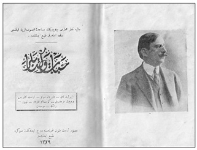
Ahmed Şuayib’in Servet-i Fünûn’daki yazıları daha sonra bir araya getirilmiş ve Hayat ve Kitaplar
(1901) başlığı altında yayımlanmıştı. Kitapta, Auguste Comte’un “hikmet-i ictimaiyye”nin kurucusu
olduğu belirtiliyor, Tarde ve Durkheim ilk kez Osmanlı literatüründe yer alıyordu.
Haftalık Türkçe-Fransızca Takvim-i Ticaret – Le Moniteur du commerce, 1866-1873 arası 114 sayı basıldı. 1867’de Mehmed Arif haftalık Ayine-i Vatan’ı on sayı çıkardı. Tuhfetü’t-Tıb 1867’de yayımlanan bir başka “fen” dergisiydi. Böylece Tanzimat’la birlikte gündeme gelen Osmanlı “aydınlanma” girişimi, 1860’lı yıllarda önemli bir yol kat etmiş oluyordu. Aynı yıllarda Osmanlı basını giderek yaygın bir okur kitlesi oluşturdu. Osmanlı dergiciliği de ansiklopedici yaklaşımıyla kamuoyunun oluşumuna katkıda bulunuyordu.
Dergicilik 1870’li yıllarda da gelişimini sürdürdü. Yurtdışına kaçmak zorunda kalan Ali Suavi’nin Ulum dergisi 19. yüzyıl fikir dergiciliğinde önemli bir adımdı.74Ek olarak alfabetik sırayla bilimler üzerine ayrıntılı bilgi içeren bir ansiklopedi veren Ulum, Vakâyi-i Tıbbiyye’nin başlattığı ve Mecmua-i Fünûn’un geliştirdiği ansiklopedici geleneği sürdürdü. Batı felsefesi tarihi ilk kez Ali Suavi’nin kalemiyle Ulum’da yer aldı. Dergide Batı’ya yönelik görüşler dini temele dayandırıldı; yeniliklerin kökleri İslam’da arandı. Diğer bir deyişle İslamcılıkla Batıcılık Ulum dergisinde bağdaştırılıyordu. Bir tür İslam modernizmi gündemdeydi. Ulum’da Ali Suavi İslamlaşmaktan yana bir tavır koyarken aynı zamanda çağdaş uygarlık düzeyine erişmeyi amaçlıyordu. Bu arada Ali Suavi’nin yazılarında Türkçülüğün ilk belirtilerine rastlanıyor, Batı ulusları karşısında Türkçülükte çözüm aranıyordu. Bu ilkeler doğrultusunda Suavi’nin sentezci yaklaşımı 20. yüzyılın ilk on yıllarında Osmanlı fikir hayatını geniş ölçüde etkiledi.
1870’li yıllar Osmanlı Devleti’nin bunalımlı bir dönemiydi. Osmanlı maliyesi iflasın eşiğindeydi. Bir süre sonra Abdülhamid tahta geçecek, Osmanlı-Rus Savaşı patlak verecekti. 1870’lerin ikinci yarısında anayasal düzene geçilmiş, Kanun-ı Esasi ilan edilmişti, bir yıl sonra parlamenter yaşam gündeme gelmişti. Ancak tüm bu güncel sorunlara karşın Osmanlı dergiciliği ansiklopedici tavrını sürdürdü; siyasetle ilgilenmeyi büyük ölçüde gazetelere bıraktı. Hasan Paşa’nın altı sayı yayımladığı Ravzatü’l-Maarif (1870-1871) edebiyat ve bilim ağırlıklı bir dergiydi. 1871’de yedi sayı çıkan on beş günlük Sıhhatnüma tıp dergisiydi. 1871’de aylık Ceride-i Tıbbiyye-i Askeriyye yayımlandı. Mevâdirü’l-Âsar (1873), on bir sayılık Revnak (1873-1875), Öteberi (1873), Mecmua (1873), M. Arif’in çıkardığı, sonradan Musavver Medeniyyet adını alan Haftalık Medeniyyet (1874-1878) ve son olarak Afitâb-ı Maarif (1874-1875) 1870’li yılların ilk yarısında basılan dergilerin belli başlılarıydı.
19. yüzyılın son çeyreğine damgasını vuracak olan yazar Ahmed Midhat Efendi’ydi.75Ahmed Midhat, Tanzimat’ın ansiklopedici birikimini halka ulaştırmayı amaçlayan bir yazardı. 1871-1872 yıllarında on cüz olarak yayımladığı Dağarcık, dili ve düzeyi açısından Münif Paşa’nın Mecmua-i Ulum’unun popüler bir versiyonuydu. Dergi, Ahmed Midhat’ın kişiliğini yansıtmaktaydı. Avrupa bilim ve felsefesiyle İslam dininin inançları arasında çözüm arıyordu. Pozitivist felsefenin, Lamarckizmin verileriyle İslam’ın esaslarını harmanlamaya çalışıyordu. Kuran’da, hadiste Batı düşüncesine açılım arıyordu. Öte yandan, dergi, şirket fikri, özel teşebbüs, çalışarak yaşama, sosyal adalet gibi o gün için dergilerde pek görülmeyen konulara değiniyordu. Dağarcık, izin almaksızın yayımlandığı gerekçesiyle bir süre sonra Meclis-i Maarif kararıyla yayından men edildi. Kırk Anbar, Ahmed Midhat’ın sürgündeyken yayımladığı bir başka dergiydi. Mehmed Cevdet müstear adıyla çıkarılan dergi 1873-1876 arası otuz sayı yayımlandı.
1870’li yılların ikinci yarısında Abdülhamid yönetimine rağmen dergicilik ivme yitirmemişti. 1875’te Keşkül, bir yıl sonra Mir’at-ı İber yayımlandı. Haftalık Arkadaş 1876’da on üç sayı çıktı. Ebüzziya Tevfik, sekiz sayı aylık Muharrir’i (1876-1878) yayımladı. Mehmed Esad yedi sayı, on beş günlük Derme Çatma’yı (1878-1879) bastı. 1878’de Ahmed Cevad’ın sekiz cüzlük Yadigâr’ı, 1878-1879’da da Cemiyet-i İlmiyye’nin on beş günlük Mecmua-i Ulum’u yayın hayatına girdi.
1878 başında II. Abdülhamid Osmanlı Meclisi’ni tatil edip Kanun-ı Esasi’yi askıya aldı. 1908’e değin sürecek bir mutlak yönetim dönemi başladı. 1878’de kurulan Sansür Heyeti’yle basın etkin bir biçimde denetlenir oldu. Gazeteler bundan böyle basım öncesi kayıt altındaydı. Ancak, 1879 ertesi, gazetelere oranla dergi sayısında büyük artış görüldü. Edebi ve siyasi nitelikteki Mecmua-i Ebüzziya 1880’de yayımlanmaya başladı. Osmanlılığı savunan ve Ebüzziya Tevfik’in çıkardığı bu dergi 1887-1894 arası yayınına ara verdi. Kurucusunun ölüm tarihi olan 1912’ye kadar 159 sayı basıldı. Aylık Şark dergisi 1880-1881 arası sekiz sayı çıktı. Mahmud Celaleddin ve Samipaşazade Baki tarafından yayımlanan haftalık Hazine-i Evrâk dergisi 1882-1883 yıllarında altmış üç sayı basıldı.
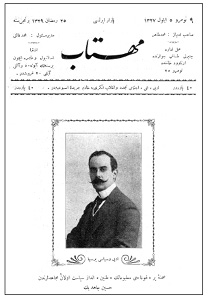
Hüseyin Cahid Servet-i Fünûn’daki yazılarıyla temayüz etti.
Meşrutiyet yıllarında çıkardığı Tanin gazetesi ise İttihat ve
Terakki’nin yarı resmi yayın organı oldu.
Dergi, halkın eğitiminin salt okul ve üniversitelerden beklenemeyeceğini, Avrupa’da milyonlarca yayının benzer işlevler üstlendiğini kaydederek, bilim ve eğitime yayın yoluyla hizmet etmeyi amaçladı. Münif Paşa’nın Mecmua-i Fünûn’daki olumlu çabalarına değinen dergi, benzer bir işlevi üstleneceğini ve ülkenin “aydınlanması”na yardım edeceğini açıklıyordu. Hazine-i Evrak Tanzimat döneminin usta ve genç yazarlarını aynı çatı altında topladı. Sayfalarında sık sık Batı’dan çeviriler ve mektuplara yer verdi. Münif Paşa, Namık Kemal, Recaizade Mahmud Ekrem, Samipaşazade Sezai, Abdülhak Hamid derginin yazarları arasındaydılar.
1880-1881 yılları arasında yirmi sayı yayımlanan Hafta dergisi Şemseddin Sami tarafından çıkarıldı. Okuma-yazma, eğitim ve özellikle dil konuları dergide ağırlıklıydı. Hemen hemen tüm yazıları Şemseddin Sami tarafından kaleme alınan Hafta dergisinde, Osmanlı tabirinin sadece bir devlet unvanı olduğu, milletin adının Türk olması gerektiği savunulmuş, konuşulan dilin Türkçe olduğu vurgulanmıştı. Hafta Türkçülük fikrinin ilk işlendiği dergilerden biriydi. Mehmed İzzet 1882’de Rehber-i Fünûn’u çıkardı. On beş günlük bu dergi on bir sayı yayımlandı. Menemenlizâde Mehmed Tahir’in çıkardığı Gayret edebiyata ve “fenler”e ağırlık veren bir dergiydi. 1886-1887 arası otuz üç sayı yayımlandı. Mektuplaşma biçiminde fikir tartışmalarına Gayret’te geniş yer verildi. Dergide, Abdülhak Hamid, Ali Ulvi, Besim Ömer, Beşir Fuad, Namık Kemal, Recaizade Ekrem, Samipaşazade Sezai gibi imzalara rastlandı.
19. yüzyılın son on yılına damgasını vuran dergi Servet-i Fünûn’du. II. Abdülhamid döneminde, siyasal düşüncenin baskı altında tutulduğu bir ortamda çıkan Servet-i Fünûn yeni bir fikir ve edebiyat çığırı başlatmıştı. 1891 Martı’nda Ahmed İhsan (Tokgöz) tarafından yayımlanmaya başlanan dergi, ansiklopedici gelenek doğrultusunda, başlangıçta Batı kökenli bilimsel ve teknik bilgilerle donatılmıştı. Servet-i Fünûn, yazı işleri müdürlüğüne Tevfik Fikret’in getirilmesinden sonra edebiyat ve sanat ağırlıklı bir dergiye dönüştü. Ancak, Servet-i Fünûn’un fikir dergiciliği alanında da önemli bir yeri vardı. Ahmed Şuayib, Mehmed Cavid, Hüseyin Cahid gibi yazarlar Servet-i Fünûn ortamında kimlik kazandılar. Tevfik Fikret’le birlikte, Servet-i Fünûn artık yeni bir edebiyatın, Edebiyat-ı Cedide’nin sözcüsü oldu. Osmanlı edebiyatında 1860’tan beri sürmekte olan Doğu-Batı kavgası Batı edebiyatının yengisiyle sonuçlanmıştı. Kısa sürede genç bir yazar kesimini çevresinde toplayan dergi, geleneksel kültür ve edebiyata savaş açmıştı. Bu arada Hazine-i Fünûn, Resimli Gazete, İrtika, Musavver Malûmat, Servet-i Fünûn’un boy hedefleriydi.
Abdülhamid’in baskı ortamında fikir kavgası ancak edebiyat aracılığıyla sesini duyurabiliyordu. Servet-i Fünûn, 1901 yılında Hüseyin Cahid’in Fransızcadan çevirdiği “Edebiyat ve Hukuk” başlıklı bir yazı nedeniyle kapatıldı. Çeviri, 1789 Fransız Devrimi’ne yer vermesi nedeniyle halkı kışkırtıcı nitelikte bulunmuştu. Ancak beraat etti ve altı hafta sonra Servet-i Fünûn tekrar yayımlandı. Bu arada dergi Fransız edebiyatını taklitle suçlandı; muhaliflerinin eleştiri oklarına hedef oldu. Bu çevrelere göre Servet-i Fünûn ülke gerçeklerine kayıtsızdı; “gayr-ı millî”, kozmopolit bir edebiyat türü yaratmıştı. Dil ve üslup bakımından da halktan uzak, yapay bir yol izlenmekteydi. Servet-i Fünûn’un etkin olduğu dönemde gelenekçi kesimin dergicilik alanında atılımı Musavver Malûmat’tı. Mehmed Tahir tarafından yayımlanan dergi 1895-1903 arası 423 sayı çıktı. Abdülhamid dergiyi maddi yönden destekledi. Dergide yer alan yazılarda Servet-i Fünûn yoz ve bireyci bir edebiyatın sözcülüğünü yapmakla suçlandı. Servet-i Fünûn’a yapılan eleştiriler zamanla etkisini gösterdi. Yazarları arasında görüş ayrılığı çıktı. Etkinliği giderek azaldı. II. Meşrutiyet’le birlikte yeni bir çıkış yapılmak istendiyse de, artık çok geçti. Osmanlı toplumu yeni yönelimlerin arayışı içindeydi. Seçkinci bir anlayıştan uzaklaşılarak “halka doğru” gidilmeye başlanmıştı.
Abdülhamid döneminde siyasal sorunlara değinemeyen dergilerde izlenen fikir tartışmaları oldukça yavandı. Çoğunlukla dünyayla ilgili genel haberler ve eklektik, yararlı bilgiler vermekle yetinildi. Öte yandan dergiler gravür, fotoğraf ve benzeri görsel malzemeyle bezenmeye başladı. Batı’dan getirtilen klişeler dergi sayfalarında geniş yer tuttu. Servet-i Fünûn, Resimli Gazete, Musavver Malûmat okuru görsel yönden de cezbeden dergiler oldu.
II. Meşrutiyet Yayın Hayatı
Yayın hayatında II. Meşrutiyet bir dönüm noktası oldu. “Hürriyetin ilanı”yla birlikte yayın hayatında köklü dönüşümler izlendi. 1908-1909 yıllarında 353, 1910’da 130, 1911’de 124 gazete ve dergi yayımlandı. Basın özgürlüğü fikir dergiciliğini her yönüyle özendirdi. Abdülhamid’e başkaldıran ilk İslamcı-Türkçü yayın organı Sırat-ı Müstakim oldu. “10 Temmuz”un hemen ertesi kurulan derginin ilk sayısının başmakalesi “Hürriyet-Musavat” başlığını taşıyordu.
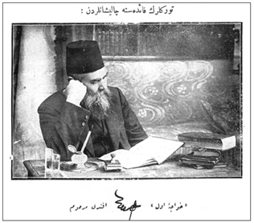
19. yüzyılın son çeyreğine damgasını vuracak olan yazar Ahmed Midhat Efendi’ydi. Tanzimat’ın
ansiklopedici birikimini halka ulaştırmayı amaçlayan bir yazardı. 1871-1872 yıllarında yayımladığı
Dağarcık, dili ve düzeyi açısından Mecmua-i Ulum’un popüler bir versiyonuydu.
Yazarı, ileride İttihatçıların şeyhülislamlığını üstlenecek olan Musa Kâzım Efendi’ydi. Mehmed Akif (Ersoy) ilk sayıdan itibaren dergiye düzenli yazı verdi. Türk Ocağı’na dönüşecek olan Türk Derneği’nin kuruluşu yine bu dergide kamuoyuna açıklandı. Sonradan Sebilürreşad adını alacak olan dergi, Rusya Müslümanlarına geniş yer verdi. Nitekim yazarları arasına bir süre sonra Ahmed Ağaoğlu da katıldı. Kadın sorunu dergide yer alan önemli konulardan biriydi. Sırat-ı Müstakim, insanları fukaralığa, atalete ve sefalete sevk eden, “fâni dünya” için çalışmayı gereksiz gören bir din anlayışına karşı tavır koyuyor, ticaret, sanayi, tarım gibi uğraşların İslam dini açısından önemini vurguluyordu. Servet edinme özendiriliyor, sanayileşmenin gereğine dikkat çekiliyordu.76Eşref Edib’in kurduğu Sırat-ı Müstakim 183 sayı çıktı. Sebilürreşad ise Cumhuriyet yıllarında da, Takrir-i Sükûn’a kadar yayınını sürdürdü. Mehmed Akif, Aksekili Hamdi, Mahmud Esad, İzmirli İsmail Hakkı, Ahmed Naim, Bursalı Tahir, Halim Sabit, M. Şemseddin Sebilürreşad’ın yazarları arasında yer aldılar. Bir süre sonra modernist İslamcıların dergiden ayrılmaları üzerine Sebilürreşad gelenekçi İslam’ın sözcülüğünü üstlendi.77
II. Meşrutiyet’le birlikte İslamcı dergi sayısında önemli bir artış gözlendi. Beyanü’l-Hakk 1908-1910 arası 182 sayı çıktı. Tokat Mebusu Mustafa Sabri’nin yayımladığı dergi Cemiyet-i İlmiyye-i İslamiyye’nin yayın organıydı. Geniş bir yazı kadrosu olan dergi, dini konuların yanı sıra, güncel siyasal ve toplumsal sorunlara da eğiliyordu. Dergi Sırat-ı Müstakim gibi şirketleşmeden yana yazılara yer verdi. Sada-yi Hakk aynı dönemde gelenekçi İslamcılığı savundu. Modernist İslamcı görüşlere geniş yer veren dergi 1915’te Halim Sabit’in yönetiminde yayımlanmaya başlayan İslam Mecmuası’ydı. Ziya Gökalp’in din, ahlak, eğitim gibi konular üzerine sosyolojik değerlendirmelerinin yer aldığı dergi İttihatçıların yarı resmi yayın organlarından biriydi. İslam Mecmuası iktisadi sorunlara da eğildi; “millî iktisat”ı savundu; “millî sermaye”den yana tavır koydu. Dergide 19. yüzyılın ikinci yarısından itibaren Rusya Müslümanlarının ticaret ve sanattaki atılımlarına yer verildi; Rusya’daki Müslüman burjuvazi örnek gösterildi. Abdülreşid İbrahim’in yayımladığı İslam Dünyası dönemin reformist dergilerinden bir diğeriydi. Ceride-i Sufiyye, Ceride-i İlmiyye ve Mahfil dini içerikli diğer dergilerdi. İslam modernizmini uç noktaya götüren Ziya Gökalp’ti. İslam Mecmuası, Türk Yurdu, Yeni Mecmua, İctimaiyyat Mecmuası, Milli Tetebbular Mecmuası gibi dergilerde din ve toplumsal evrim sorunlarına değinen Gökalp, kitlelere ters düşmeksizin, inançlarla uzlaşacak bir yol arayışına girişecekti.
1908 ertesi Türkçülük akımı iki farklı çizgi izledi. İstanbul ve Selanik kentleri iki değişik Türkçülük anlayışı geliştirdi. İstanbul “tarih” eksenli bir bakış açısını ön plana çıkarırken, Selanik’in esin kaynağı sosyoloji idi. Türkçülüğün İstanbul kolu, Ahmed Midhat, Mehmed Emin, Ahmed Hikmet, Yusuf Akçura, Akil Muhtar gibi yazarların önayak olmalarıyla kurulan Türk Derneği çevresinde gelişecekti. Aynı adla, Türk Derneği adıyla çıkarılan dergi yedi sayı yayımlandı. Ardından Türk Yurdu dergisi ve Türk Ocağı kuruldu. Selanik’te ise Türkçülüğün sözcülüğünü Genç Kalemler ve Yeni Felsefe Mecmuası üstlendi.78Balkan Harbi sonucu 1912’de Selanik Osmanlı toprağı olmaktan çıkınca Selanik’te Türkçülük akımının sözcüleri başta Ziya Gökalp olmak üzere İstanbul’a gelerek Türk Ocağı’na katıldılar. Bu tarihten sonra Türk Yurdu ve Türk Sözü İttihat ve Terakki çevresinden destek gördü. Hüseyinzâde Ali ve Gökalp sayesinde İttihatçı ideolojiye yakın bir politika izlendi. Türkçülüğün fikirsel yönü geniş ölçüde Türk Yurdu, Türk Duygusu ve Büyük Duygu dergilerinde geliştirildi. Balkan Savaşları ertesi Türkçülük, İttihat ve Terakki’nin yarı resmi politikasına dönüşecekti.
II. Meşrutiyet’in gündeme getirdiği Batı kaynaklı bir başka fikir hareketi sosyalizmdi. Sosyalizm ilk önce Selanik’te ses getirdi. Bu kentte İşçi Kulübü açılmış, Bulgar, Rum, Yahudi ve Müslüman-Türk işçiler bu kulüpte etkin olmuşlardı. Dört dilde yayın yapan Amele gazetesi Selanik’te yayımlanmıştı. Jön Türkler’in ilişki kurduğu Selanik Sosyalist Federasyonu bu kentte adını duyurdu. İlk 1 Mayıs Selanik’te kutlandı. İstanbul’da ise Osmanlı Sosyalist Fırkası Reisi Hilmi’nin çıkardığı İştirak, sosyalist düşüncenin sözcülüğünü üstlendi. Bu arada Meşrutiyet yıllarında felsefi alanda maddeci düşünce de önemli bir yol kat etmişti. Georg Buchner, Ernst Haeckel Osmanlıcaya çevrilmişti. Darwin, Lamarck üzerine kitaplar yazılmıştı. Batı kaynaklı yeni bir felsefe dili oluşturmayı amaçlayan Baha Tevfik, maddeci görüşe ağırlık veren Felsefe Mecmuası adlı bir dergi çıkardı. Bu yolda Fazıl Ahmed, Ahmed Nebil, Suphi Edhem gibi genç yazarlar Baha Tevfik’e yardımcı oldular. Baha Tevfik, Felsefe Mecmuası’nda, 19. yüzyılın biyolojik ve evrimci maddeciliğinden esinlenmişti. Lamarck ve Darwin’den kaynaklanan biyolojik ve evrimci maddecilik, kısa bir süre sonra İslamcıların boy hedefini oluşturacaktı.
Bilindiği gibi II. Meşrutiyet hareketi Fransız Devrimi’yle dirsek teması içerisindeydi. Çoğu yazarı Batı’ya yöneliyor, pozitivizmle liberalizmi bağdaştırmaya çalışıyordu. Ancak, Batıcılık değişik düzeylerde gündeme geldi. Batı’ya öykünmeyi son kertesine değin götüren Abdullah Cevdet’in yayımladığı İctihad dergisi bir grup Jön Türk’ü çevresinde topladı. Tanzimat’ın uzlaştırıcı Batıcılığına karşın, İctihad çevresi Batı hayranlığından ödün vermiyordu. Doğu’dan gelen her şeyi geri, Batı kökenlileri ileri buluyordu. İlericilik-gericilik İctihad yazarlarının Osmanlı fikir hayatına kazandırdıkları sözcükler oldu. Dergiye göre geleneğe bağlanmak gericilikti; geçmiş her yönüyle dışlanmalıydı. İctihad kadın haklarını ve ailenin modernleştirilmesini savunacak, medreseye karşı tavır alacak, laik bir toplum anlayışını önerecekti. Arap harflerinin Latin harfleriyle değiştirilmesi, uluslararası tartı ve ölçü sisteminin benimsenmesi İctihad’ın gündemindeki diğer konulardı.79İslamcı Sebilürreşad’la zıtlaştıkları temel meseleler bunlardı. II. Meşrutiyet yıllarında İslamcılıkla Batıcılığı ulusçu bir ideoloji çatısı altında uzlaştırmaya çalışanlar Türkçülerdi. Sırat-ı Müstakim ilk dönemlerinde Türkçülüğe ortam hazırlayacak yazılara yer verirken, Sebilürreşad ümmet birliğini parçalayacağı kaygısıyla “kavimcilik” anlayışına karşı çıkmış, Türkçüleri eleştirmişti. Mecmua-i Ebüzziya ise Osmanlıcıydı; Türk öğesini yadsımasa da siyasal birliği parçalayacağı savıyla Türkçüleri eleştirmekten geri kalmadı.
Liberalizmden Solidarizme
II. Meşrutiyet bir bilinçlenme çağıydı. Sosyal bilimlerde de önemli bir atılım gözlendi. Sosyoloji ve iktisat bu yıllarda toplumda yer etti. İktisat bilinci II. Meşrutiyet yıllarında köklü dönüşüme uğradı. Osmanlı iktisadi açıdan geri kalmıştı. İktisadi kaygılar dönemin dergilerinde, gerek kuramsal, gerek uygulamaya yönelik iktisat içerikli birçok yazının yayımlanmasına neden oldu.
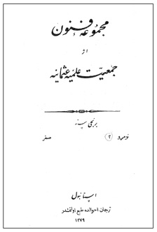
Mecmua-i Fünûn 1862’de yayımlandı. Tanzimat aydını Münif Paşa’nın
(1828-1910) kurduğu Cemiyet-i İlmiyye-i Osmaniyye’nin yayın
organıydı. 18. yüzyıl Fransız ansiklopedicilerinin işlevine benzer bir
yapıyı Osmanlı’ya taşımıştı. Batı’ya dönük aydınlara sesleniyordu.
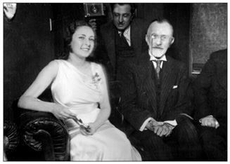
Hazine-i Evrak Tanzimat döneminin usta ve genç yazarlarını aynı çatı altında topladı. Sayfalarında
sık sık Batı’dan çevirilere ve mektuplara yer verdi. Abdülhak Hamid derginin yazarları arasındaydı.
Özellikle tarım-sanayi seçeneği sürekli tartışıldı; iktisadi gelişmeye yönelik değişik çözümler dergi ve gazete sütunlarında yer buldu. Liberal nitelikteki Ulum-ı İktisadiyye ve İctimaiyye dergisi tarımdan yana ağırlık koyarken, diğer uçta sanayileşmeyi öneren Müslüman-Türk girişimcilerinin yayın organı Sanayi dergisi yer aldı. Sanayi dergisi, kendi deyişiyle “Türk’ün sanayi sahasında atacağı milli adımlar”ı özendiriyordu; Sanayi Devrimi’nden yoksun kalan Osmanlı toplumunun en kısa sürede iktisadi bağımlılıktan kurtularak bir sanayi ülkesine dönüşmesini diliyordu. Sanayi dergisine göre ulusal varlık ancak sanayileşerek korunabilirdi. Dergi öte yandan çalışma koşullarının iyileştirilmesi için çaba sarf ediyordu. Nitekim Mütareke yıllarında işçi sorunlarına daha yoğun eğilerek sosyalist yazarlara sayfalarında yer verecekti.
Bu dönemde İttihat ve Terakki’nin iktisadi görüşlerini yansıtan dergi İktisadiyyat Mecmuası’ydı. Savaş tüm dünyada iktisadi düşüncede köklü dönüşümlere neden olmuştu. Savaşan ülkeler liberal politikaların çözümsüzlüğü karşısında “müdahale”den başka çıkar yol bulamıyordu. İktisadiyyat Mecmuası da devletin iktisadi hayata karışmasından yanaydı. 19. yüzyıl liberalizmi artık gündemden düşmüştü. List’in “milli iktisat”ı, Smith’in “liberal iktisat”ına üstün gelmişti. Ulus-devlet inşa sürecinde “devlet iktisadiyyatı” kaçınılmazdı. Tabii bu tür bir müdahalecilik o yıllarda giderek dergilerde geniş yer tutan solidarizm ya da dayanışmacılık, eski terimiyle “tesanütçülük”le uyum içerisinde gelişecekti. Solidarizm, liberalizm ile kolektivizimin arasında bir orta yol olarak görülüyordu. “Devlet iktisadiyyatı” aynı zamanda sosyal devlete açılan kapıydı. Cihan Harbi’nin neden olduğu toplumsal çöküntü Osmanlı hayatında dayanışmacılığı gerektirmiş, uzlaştırıcı bir dünya görüşü olarak solidarizmi kaçınılmaz kılmıştı. Bu nedenle çelişen toplumsal sınıflar yerine uzlaşan meslek zümreleri konacak, korporatist yönü giderek belirginleşen meslekçilik vurgulanacaktı. Osmanlı toplumsal düzeni ancak ahlak normlarıyla denetlenerek sağlanacaktı. Bu yıllarda gündeme gelen halkçılığın iktisadi boyutu, müdahaleci bir devlet modelini gerektiren iktisadi dayanışmacılıktı. Cihan Harbi yıllarında bu işlevi İttihatçıların yarı resmi yayın organı İktisadiyyat Mecmuası üstlenecekti.
1908 ile 1918 arası on yılı kapsamasına karşın Osmanlı düşünce dünyasında o güne değin görülmedik dönüşümler yaşanmıştı. İttihat ve Terakki 1908’de her yönüyle liberal bir nitelik taşıyan Ulum-ı İktisadiyye ve İctimaiyye Mecmuası’yla yola çıkmış, 1918’e gelindiğinde İktisadiyyat Mecmuası gibi koyu müdahaleci bir dergiyle aynı çizgiyi paylaşır olmuştu. 1908’in İngiliz hayranlığı Balkan Harbi ertesi Alman hayranlığına dönüşmüştü: İktisadiyyat Mecmuası’na göre Türklerin Alman milletini örnek almaları gerekiyordu; Almanların Friedrich List’i gibi Türklerin de milli iktisatçıları olmalıydı. Bu yılların Alman hayranlığı Yeni Mecmua’da izleniyordu. “Alman İttihatçılığı” Türklere örnek gösteriliyordu: Gökalp’e göre Almanlar kültürel birlik, iktisadi birlik ve siyasal birlik olmak üzere üç aşamada ulus-devletlerini kurmuşlardı. Gottfried Wilhelm von Leibniz önderliğinde “Almancılık cereyanı” ulusal birliğin kültürel boyutunu oluşturmuş, Friedrich List’in çabalarıyla gerçekleştirilen gümrük birliği iktisadi birliği sağlamıştı. Otto von Bismarck’ın iktidarıyla da Prusya önderliğinde siyasal birlik oluşmuş ve böylece “Alman İttihatçılığı” amacına ulaşmıştı. Gökalp’e göre Türk İttihatçılığı da aynı yolu izlemeliydi. Türkçülüğün ilk aşaması olan kültürel birlik ya da “harsî Türkçülük” dil ve edebiyat alanında başlatılmıştı. Savaş yıllarında gündeme gelen “milli iktisat” ise iktisadi birliği gerçekleştirecekti. Her iki birliği noktalayacak olan siyasi birlikti.
İktisadiyyat Mecmuası’nın yanı sıra Cihan Harbi’nin son yılında yayımlanan “müdahaleci” diğer bir iktisat dergisi Ulum-ı Siyasiyye ve İktisadiyye Mecmuası’ydı. Bu arada savaş yıllarında güçlenen bir “milli ticaret” anlayışı vardı. Bu çevrelerin yayın organı Ticaret-i Umumiyye Mecmuası’ydı. Ahmed Hamdi’nin (Başar) yayımladığı dergiye göre, milliyetçilik iktisadi bağlamda koruyuculuğu gerektiriyordu. Ulusal varlık ancak ulusal nitelikte bir iktisadi yapıyla gerçekleşebilirdi. Bu nedenle serbest ticaret ilkesi bir kenara bırakılmalı, sanayileşmeye ağırlık veren bir “milli iktisat” politikası izlenmeliydi. Öte yandan tarımsal ve hayvansal ürünleri girdi olarak işleyebilecek bir sanayi, ülkenin tarım ve hayvancılığını da geliştirecekti.
Böylece Cihan Harbi yılları dergilerinde liberal iktisadi düşünceye karşı çıkılmış, müdahaleci ya da devletçi bir tutum takınılmıştı. Bu tür anlayışın ilk belirtileri daha 1910’ların ilk yarısında Türk Yurdu’nda filiz vermeye başlamıştı. 1908’in liberal ortamı, rekabet olanaklarından yoksun Müslüman-Türk esnafı güç durumda bırakmış, yabancılara geniş iktisadi olanaklar sağlanmıştı. Türk Yurdu dergisine göre koruyucu bir iktisat politikası kaçınılmazdı. Yusuf Akçura’ya göre, bir Türk burjuvazisi oluşturulmalıydı. Alexander Lvovich Parvus’un yazılarına da yer veren Türk Yurdu, iktisadi bağımsızlık sorununa değinen ilk Osmanlı dergisi sayılabilirdi. Benzer bir yaklaşım İslam Mecmuası’nda da izleniyordu. Bu dergide Ahmed Muhiddin, List’ten esinlenerek uluslararası işbölümüne karşı çıkıyor; ulus düzeyinde kendi kendine yeterli bir ekonomik düzenden yana olduğunu vurguluyordu.
Son olarak II. Meşrutiyet yıllarında “aydınlanma” düşüncesini doruğa taşıyacak olan dergi Yeni Mecmua’ydı. Bu yıllarda “avam” ya da “ahali” sözcükleri yerini “halk” sözcüğüne bırakmıştı. Halkçılık ve dayanışmacılık Yeni Mecmua sayfalarında derinlik kazandı. Halkçı düşüncenin ilk belirtileri ve bu arada köycülük, Türk Ocağı’nın kurulduğu yıllarda ortaya çıkmıştı. Türk Ocağı ile Milli Talim ve Terbiye Cemiyeti çevresinde toplanan Osmanlı aydınları Türk Yurdu ile Halka Doğru dergilerini yayımlamışlardı. Halka gitmeyi, halka inmeyi, halkı uyarmayı amaçlayan Osmanlı popülistlerinin sözcülüğünü ilk evrede Yusuf Akçura üstlenmişti. Türk Yurdu’nda ulusun halktan kaynaklandığı vurgulanıyor, halktan ayrı bir ulus kavramının düşünülemeyeceği belirtiliyordu. Uluslaşabilmek için halkı yükseltmek gerekiyordu. Osmanlı aydın halka doğru “inme”li, halkı anlamalıydı. Bu tür bir anlayışın sosyolojik yönü Yeni Mecmua’da kristalleşti. Savaş yıllarında yayımlanacak olan İctimaiyyat Mecmuası artık sosyolojinin Osmanlı bilim dünyasında sarsılmaz bir yer edindiğinin kanıtıydı. Bu arada Gökalp, korporatist görüşlerini Millî Tetebbular Mecmuası’nda da işleyecek, ülkeyi korporasyonların ulusal düzeyde temsilcilerinden oluşacak bir meclisle yönetmeyi önerecekti. Gökalp, savaşın sonlarına doğru Alman “milli iktisat”ıyla, Fransız “solidarizm”ini harmanlıyor; savaşın neden olduğu iktisadi ve toplumsal çöküntüye “ahlaki” normlarla yüklü bir çözüm getiriyordu.
Ziya Gökalp ve Tekin Alp’in Yeni Mecmua’daki solidarizm ya da “tesanütçülük” üzerine yazıları Durkheim’in bu iki düşünürü ne denli derinden etkilediğini gösteriyordu. O tarihlerde Durkheim’in görüşlerinin Fransa dışında bu denli etkin olduğu bir başka ülke bulmak olanaksızdı. Sosyoloji 1908 ertesi Osmanlı topraklarında hızla yer edinmiş ve her derde deva bir bilim olarak algılanmıştı. Ancak, yukarıda belirtildiği gibi, 1908 ile birlikte İstanbul ve Selanik’te iki farklı sosyoloji yeşerecekti. İlki Ulum-ı İktisadiyye ve İctimaiyye Mecmuası çevresinde psikolojiden esinlenen daha “bireyci” anlayışı yansıtıyordu. Auguste Comte ve Spencer dergide hâkim konumdaydı. İkincisinde ise Alfred Fouillée ve Émile Durkheim’in daha “toplumcu” sosyoloji açılımı söz konusuydu. Selanik’te savunulan “Yeni Hayat” anlayışı sosyolojinin de “yeni”sini gündemine almıştı.
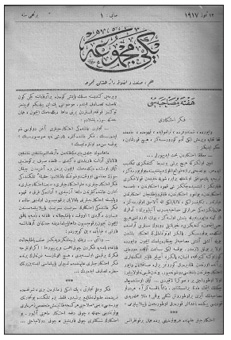
II. Meşrutiyet yıllarında “aydınlanma” düşüncesini doruğa
taşıyacak olan dergi Yeni Mecmua’ydı. Bu yıllarda “avam” ya da
“ahali” sözcükleri yerini “halk” sözcüğüne bırakmıştı. Halkçılık ve
dayanışmacılık Yeni Mecmua sayfalarında derinlik kazandı.
Ulum-ı İktisadiyye ve İctimaiyye Mecmuası80
İstanbul’da yayımlanan Ulum-ı İktisadiyye ve İctimaiyye Mecmuası II. Meşrutiyet’le birlikte pozitivist düşüncenin sözcülüğünü üstlenmişti. Akademik görünümde yirmi altı sayı çıkan dergide iktisadi ve sosyal sorunlar klasik liberal anlayış ışığında değerlendirilecekti. Sosyolojiyle ilgili ilk kapsamlı yazılar yine bu dergide yer aldı. Mehmed Cavid, Rıza Tevfik ve Ahmed Şuayib’in çıkardıkları derginin ilk sayısında yer alan manifesto niteliğindeki “Mukaddime ve program” başlıklı yazıda derginin sosyoloji alanında göstereceği çaba vurgulanıyordu: Auguste Comte’un “hikmet-i ictimaiyye”, Le Play’in “ilm-i cemiyet” alanındaki çalışmaları son zamanlarda “şayan-ı hayret” bir ilgi doğurmuştu. Sosyoloji 19. yüzyılın ikinci yarısında o derece gelişim göstermişti ki, “ulum-ı ictimaiyye”ye her derde deva gözüyle bakılıyordu. Osmanlı sosyal bilim dünyasının temel sorunu Batı biliminin kavramlarına karşılık bulmaktı. “Ulum-ı ictimaiyye” aslında toplumsal bilimler anlamına geliyordu. Nitekim dergide de kullanılan ve türetilen sözcükler her zaman sosyolojiyi en geniş boyutuyla kapsıyordu. Derginin önsözünde de buna dikkat ediliyor ve “ulum-ı ictimaiyye” tercih görüyordu.
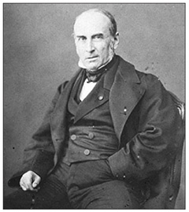
Le Play’in “science sociale”i ise jeoloji üzerine kuruluydu. Comte
genelleştirmeden yanaydı. Le Play ise zümreleri birbirlerinden farklı, ayrı
cinsten varlıklar olarak gördüğü için bireyselleştirici bir yöntem izliyordu.
Üç kurucu yazarın ortak kaleme aldıkları bu giriş yazısına göre “ulum-ı ictimaiyye” sayesinde artık felsefe, tarih, hukuk, ahlak, sanat hakkında beşeri bilgiler tümüyle değişmiş, bambaşka ufuklara açılmıştı. Bu tür bir açılımı bu bilim alanlarını başlatan Batılı öncüler bile akıllarından geçiremezlerdi. Artık “ulum-ı ictimaiyye” olmaksızın, devlet ricali girişeceği yenilik ve ıslahat hareketlerinde izlenecek yolu bulamazdı. Bunu bütün bilim adamları itiraf ediyorlardı. Bu nedenle, bundan böyle dergi “ulum-ı ictimaiyye” alanında ünlenmiş yazarların seçkin yayınları hakkında ayrıntılı makalelere yer verecekti. Ancak, bu konuda bir uyarıda bulunmayı da gerekli görüyordu. Batı’da gelişen fikirler konusunda temkinli davranmak gerekiyordu. Batı’da aşırı köktenci fikir hareketleri de doğmuştu. Toplumları sarsan bu tür fikirlerin dergide yeri yoktu. “Hikmet ve ihtiyat, vazife ve hak” yolu derginin rehberi olacaktı. Dergiye göre, o gün için aşırı fikirler sosyalizm, komünizm, anarşizm ve feminizm olarak tanımlanıyordu.81
Ulum-ı İktisadiyye ve İctimaiyye Mecmuası, Sâtı el-Husrî, Bedii Nuri, Asaf Nef’i, Dr. Edhem, Faik Nüzhet gibi birçok genç yazara dergi sayfalarını açmıştı. Servet-i Fünûn’un pozitivist dünya görüşü, Ahmed Şuayib aracılığıyla bu dergiye ulaşmıştı. Evrimcilik ya da o günkü deyişle “tekâmül” derginin temel ilkesiydi. Auguste Comte ve Spencer’dan etkilenen yazarları, evrim ve organik toplum görüşüne geniş yer vereceklerdi. 18. asırda Fransız felsefesi ağırlıklı olarak “ferdiyyet” taraftarıydı. Ve bunun sonucu olan Fransız Devrimi ve İnsan Hakları Beyannamesi “cemiyet”ten çok “ferd”in hukukuna sahip çıkmıştı. Bu bir ölçüde Jean-Jacques Rousseau’nun “mukavele-i ictimaiyye”si ya da toplum sözleşmesinin sonucuydu. “Cemiyet” yapay bir olguydu; bireyler arası yapılan bir sözleşmenin sonucuydu. Toplum bir organizma olarak görülmüyor, insanlar tarafından “imal edilmiş” yapay bir “şirket” olarak algılanıyordu. Kısaca sosyolojinin gündeme gelmesine kadar Fransız felsefesi, toplumu bireylerin arzusuyla ortaya çıkmış bir sözleşmenin mahsulü olarak görüyordu. Almanya’da ise bireyleri devlete tabi kılan bir anlayış hâkimdi. Fransa’da “ferdiyyet” fikri ağırlığını koyarken Almanya’da “devlet” ön plana çıkıyordu. Almanya’da bu devlet hissi, devlet azameti, devlet “dini” Alman filozofu Hegel’den kaynaklanıyordu. 19. yüzyılın ortalarında gündeme gelen sosyolojik düşünce devleti değil, “millet”i ele almış, “milli vahdet” bireyi aşan toplum anlayışını benimsemişti. Ama bu aşamada birey göz ardı edilmemiş, o nedenle psikoloji ile sosyoloji arasında yakın bağ kurulmuştu.
Ulum-ı İktisadiyye ve İctimaiyye Mecmuası liberal bir dergiydi. Kurucularından Mehmed Cavid, Smith-Ricardo-Bastiat çizgisinde iktisat kitapları yazmış, uluslararası işbölümüne inanmıştı. Osmanlı, bu nedenle tarım ülkesiydi ve tarım ülkesi kalmalıydı. Yapay yöntemlerle sanayileşmek ülkeyi fakirleştirirdi. Osmanlı toprakları yabancı sermaye olanaklarından en geniş ölçüde yararlanmalıydı. Balkan Harbi’ne kadar süren Meşrutiyet liberalizminin sözcüsü Ulum-ı İktisadiyye ve İctimaiyye Mecmuası’ydı. Derginin en önemli özelliği Osmanlı topraklarına sosyolojiyi getirmesiydi. Ancak bu sosyoloji uzviyetçi bir sosyolojiydi. Bir diğer deyişle Émile Durkheim öncesi yaygın olan sosyolojiydi. Bu nedenle de derginin sosyolojiye yönelik yazıları Herbert Spencer’ın ötesine geçmiyordu. Durkheim henüz keşfedilmemişti ve Osmanlı düşüncesinde yer almıyordu.
Toplumları organizmalara ya da insan bedenine benzeten anlayışın kökenleri çok eski zamanlara uzanıyordu. Hint, Çin, Eski Yunan ve Roma felsefelerinde bu tür benzetmeler vardı. İnsan her şeyden önce biyolojinin yasalarına bağlıydı; toplumsal olaylar da biyolojik olayların bir türüydü. Bu nedenle toplum bir organizmaydı. Ortaçağ düşünürleri de bu yola başvurmuşlardı. Niccolò Machiavelli, Tommaso Campanella gibi düşünce dünyasında çığır açan düşünürler, toplumların insan doğasındaki evrelerden, çocukluk, erginlik, yaşlılık gibi çağlardan geçtiklerini, tıpkı organizmalar gibi kimi kez sağlıklı, kimi kez hasta olduklarını ifade etmişlerdi. Sosyal fizikçiler ve atomcular bile bu tür benzetmelere başvurmuşlardı. Aslında organisist ya da uzviyetçi kuramlar 19. yüzyılın ikinci yarısında atomcu, bireyci, mekanik görüşlere tepki olarak gündeme gelmişti. Birçok düşünür Fransız Devrimi’nin hüsranla sonuçlandığı kanısındaydı. Bundan böyle bireylerin sözleşmesiyle oluşan toplum anlayışı, bir diğer deyişle toplumsal atomculuk yerini uzviyetçi kuramlara bırakacaktı. Louis de Bonald, Joseph de Maistre, Edmund Burke, Adam Müller, Johann Gottfried Herder, Gotthold Ephraim Lessing, Johann Gottlieb Fichte, Immanuel Kant, Friedrich Wilhelm Joseph Schelling, Georg Wilhelm Friedrich Hegel, tüm bu düşünürler organisist anlayışın yaygın bir konum kazanmasında önemli rol oynadılar. Ve 19. yüzyılda organisist toplum anlayışı Karl Christian Friedrich Krause, Saint Simon, Auguste Comte, Herbert Spencer gibi düşünürler aracılığıyla hâkim bir konum elde edecekti. Özellikle 19. yüzyılda biyoloji alanında görülen büyük ilerleme toplumsal alanda organisist kuramların gelişimine de katkıda bulunacaktı. Antropolojinin 19. yüzyılın ikinci yarısından itibaren bu denli rağbet görmesi bir rastlantı olamazdı. Toplumsal yaşamı biyolojik verilerle anlatan değişik kuramlar doğmuştu. Darwin’den sonra biyolojinin temelini özellikle organizma, soyaçekim, ayıklanma, değişim, uyum, yaşam kavgası gibi alanlar oluşturacaktı.
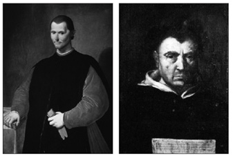
Niccolò Machiavelli, Tommaso Campanella gibi düşünce dünyasında çığır açan düşünürler,
toplumların insan doğasındaki evrelerden, çocukluk, erginlik, yaşlılık gibi çağlardan geçtiklerini,
tıpkı organizmalar gibi kimi kez sağlıklı, kimi kez hasta olduklarını ifade etmişlerdi.
Böylece bio-organik anlayış, toplumsal yaşamı biyolojiyle açıklamaya çalışan görüş, Paul von Lilienfeld, Albert Eberhard Friedrich Schäffle, René Worms, Jacques Novicow gibi düşünürlerce savunuldu. Toplum ya da toplumsal zümre, biyolojik organizmaların özel bir türüydü. Toplum bir organizma olduğuna göre yapı ve görev bakımından biyolojik organizmalara benziyordu. Toplum da biyolojide organları yöneten yasalara bağımlıydı. Sosyoloji öncelikle biyoloji üzerine kurulmalıydı. Bio-organisistler toplumsal olayları açıklamak için biyolojik organlarla toplumsal “organlar” arasında sürekli karşılaştırmalara başvuracaklardı. Lilienfeld’e göre insan topluluğu doğal organlar gibi gerçek bir varlıktı. Toplum doğanın devamından başka bir şey değildi. İnsanlar arasındaki karşılıklı etkilerin bir sistemiydi. Bu nedenle sosyoloji, biyolojinin temelleri üzerine kurulmalıydı. Schäffle toplumdaki entelektüel ve pedagojik kurumları sinir sistemine benzetiyor, devleti de organik bir görüşle anlatıyordu.
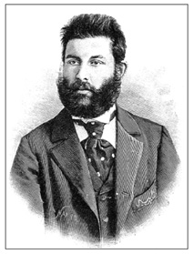
Abdullah Cevdet’in yayımladığı İctihad dergisi bir grup Jön
Türk’ü çevresinde topladı. Tanzimat’ın uzlaştırıcı Batıcılığına
karşın, İctihad çevresi Batı hayranlığından ödün vermiyordu.
Doğu’dan gelen her şeyi geri, Batı kökenlileri ileri buluyordu.
Bio-organisistler arasında en popüler olanı Herbert Spencer’dı. Osmanlı erken sosyolojisinde de Spencer başı çekiyordu. Nitekim Ulum-ı İktisadiyye ve İctimaiyye Mecmuası bunun somut kanıtıydı. Toplumsal organizma ile biyolojik organizma arasındaki benzerliği anlatırken şu hususlara dikkat çekiliyordu: İkisinde de büyüme vardı; büyürken her ikisinin de yapı ve görevlerinde farklılaşma baş gösteriyordu; her ikisinin de parçaları arasında bir karşılıklı bağımlılık vardı. Her ikisi de hücre, birey gibi birimlerden oluşmuştu; her ikisinin de birer besi, dağıtım ve düzenleyici sistemi vardı. Organlardaki damar ve dolaşım sistemi, toplumda ticaret yollarına tekabül ediyordu.
Osmanlı düşüncesi ulus inşa sürecinde bu tür organisist ya da uzviyetçi yorumlara her zaman başvurdu. Gökalp bu tür düşünceye sahip Osmanlı aydınlarının başında geliyordu. “Milli iktisat”ın temel dayanak noktalarından biri organisist anlayıştı. Gökalp, İttihat ve Terakki örgütlerine yayınladığı bir genelgede “iktisadi kapitülasyonlardan kurtulunması için her şeyden önce kapitülasyonların kaldırılması” gerektiğini söylüyordu. Bunun için ise önce “iktisadî teşkilat”a sahip olmak gerekliydi. Milletin siyasi örgütü devletti. Devlet bir uzviyet olarak görülürse bu uzviyeti hareket ettirici aygıt, Gökalp’in deyimiyle “cihâz-ı harekî” millet idi. Millet toplumsal uzviyete benzetiliyor, iktisadi örgüt ise bu uzviyetin kan dolaşım aygıtı, “cihâz-ı deverân”ı oluyordu. İnsan uzviyetinde hareket aygıtının merkezi beyindi; ulusal uzviyette de siyasal örgütün merkezi Kabine’ydi. Benzer düşünüşle, insanın kan dolaşımının merkezi kalp olduğuna göre, ulusal uzviyette de iktisadi örgütün bir düzenleyici merkezi, “merkez-i nâzımı”, bir diğer deyişle “kalbi” olması gerekiyordu. İşte ulusta kan işlevini gören “kredi”ydi. Kalbin kan dolaşımını düzenleyişi gibi millette de tüm kredileri “banka” dağıtmaktaydı. Ziya Gökalp bu benzetmeden yola çıkarak Osmanlıların “millî deverân-ı demi”nin merkezinin, yani “millî kalbi”nin olmadığı sonucuna varıyordu. Sonuç olarak, genelgede, İttihat ve Terakki Cemiyeti’nin teşviki ve Babıâli’nin yardımıyla kurulan Osmanlı İtibar-ı Milli Bankası’nın siyasal bağımsızlığı sınırlayan engelleri gidereceği, Osmanlıların şiddetle muhtaç oldukları “milli kalbe” sahip kılacağı vurgulanıyordu.82
19. yüzyıl sosyolojisinde biyolojinin yanı sıra psikolojinin de önemli bir konumu vardı. Bilindiği gibi Auguste Comte, bilimleri matematik, astronomi, fizik, kimya, biyoloji ve sosyoloji olarak sıraya dizmişti. Bu sıralamada psikolojinin yeri yoktu. Auguste Comte’un sıralamasını Stuart Mill ve Herbert Spencer eleştirmiş, her ikisi de biyoloji ile sosyoloji arasına sosyolojiye temel oluşturacak psikolojiyi sokmuşlardı. Böylece sosyoloji, psikoloji temeli üzerine kurulmuş, psikolojizm akımı ya da psikoloji ekolünden doğmuştu. Bu görüş Ulum-ı İktisadiyye ve İctimaiyye Mecmuası’nda da hâkim konumdaydı. Aslında psikoloji kitapları Osmanlı’da sosyolojiden önce yayımlanmaya başlanmıştı. Bu Abdülhamid’in baskıcı ortamıyla yakından ilgiliydi. “Cemiyet” her halükârda sakıncalı bir sözcüktü. Oysa psikolojide sakınılması gereken bir taraf yoktu. Hoca Tahsin’in 1884 tarihli eserinin adı Psiholoji yahud İlm-i Ruh’tu. Bu Osmanlı’da psikoloji üzerine yayımlanmış ilk risaleydi. Eserde Fenn-i Ahvâl-i Ruh, İlm-i Ahvâl-i Ruh, Fenn-i Psiholoji ve Psiholociya psikoloji için kullanılan Osmanlıca karşılıklardı.83
Sosyolojiyi psikolojinin boyunduruğundan koparan ve sosyolojiyi bağımsız bir bilim konumuna getirecek olan Émile Durkheim’di. Ancak Ulum-ı İktisadiyye ve İctimaiyye Mecmuası’nda Durkheim’in adı bile geçmiyordu. Durkheim’de kollektif bilinç, bireysel bilinçten tümüyle ayrılacak, Durkheim 1894’te yayımlayacağı Les règles de la méthode sociologique’de toplumun bireylerin bir toplamı olmadığını, bir bireşimi, sentezi olduğunu, toplumsal yaşamın açıklamasının psikolojik yaşamda değil, gene toplumsal hayatta aranması gerektiğini savunacaktı. Durkheim, kolektif bilinci bireysel bilinçten farklı kılarken “dışsallık” ve “baskı” olmak üzere iki nesnel niteliğe başvuruyordu. Toplumsal olay din, ahlak, hukuk, mantık gibi türlü şekiller altında bireysel bilinçlere “dış”tan geliyor, bireyin iradesi dışında ona zorla kabul ettiriliyordu. Durkheim, sosyolojiye bireysel bilinç ve bireysel tasarıdan bağımsız olan toplumsal bilinç ve toplumsal tasarıyı sokmuştu.
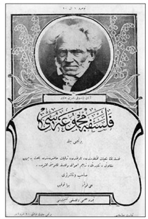
Baha Tevfik, Felsefe Mecmuası’nda, 19. yüzyılın biyolojik ve evrimci
maddeciliğinden esinlenmişti. Lamarck ve Darwin’den kaynaklanan biyolojik ve
evrimci maddecilik, kısa bir süre sonra İslamcıların boy hedefini oluşturacaktı.
Özetlenecek olursa, sosyoloji 19. yüzyılın buhranlarına bir çözüm arayışıydı. Sanayi Devrimi ile birlikte kapitalizm iyice serpilmiş, emekçi kesimin talepleri gelişmiş ülkelerin ana sorunu olmuştu. Her türlü “aşırı” akımlar emekle sermaye arasındaki uyuşmazlıktan kaynaklanıyordu. Fransa’da sosyoloji bir anlamda Auguste Comte ile Le Play’in öncülüğünde doğmuştu. Her ne kadar sosyolojinin doğuşunu Montesquieu’ye kadar geri çekenler olmuşsa da Auguste Comte bir kırılma noktasını oluşturuyordu. Comte’un sosyolojisinde örnek fizikti; Le Play’in “science sociale”i ise jeoloji üzerine kuruluydu. Comte genelleştirmeden yanaydı. Toplumsal zümreleri fizik olayları gibi “tecânüslü”, yani kendi bütünlüğü olan varlıklar sayıyordu. Le Play ise zümreleri birbirlerinden farklı, ayrı cinsten varlıklar olarak gördüğü için bireyselleştirici bir yöntem izliyordu. Comte’un çizgisinden yola çıkan Durkheim ile sosyoloji bambaşka bir kisveye bürünüyordu. Görüşleri Henri Hubert, Marcel Mauss, Célestin Bouglé, Lucien Lévy-Bruhl, Maurice Halbwachs, Georges Davy gibi sosyologlarca 20. yüzyıla taşınarak Fransız sosyolojisinin omurgasını oluşturacaktı. Bu arada Durkheim’in rakibi Gabriel Tarde’dı. Tarde’ın görüşleri özellikle ABD’de rağbet görmüş, yeni bir psikoloji ekolünün doğuşuna vesile olmuştu. Ve nihayet yukarıda da sözü edilen Herbert Spencer’ın organisist yani uzviyetçi anlayışı farklı bir çizgiyi temsil ediyordu. Spencer’ın görüşleri Espinas ve daha sonra René Worms tarafından benimsenecek ve 20. yüzyıla taşınacaktı. Osmanlı’da sosyoloji ilk evrelerinde yukarıda da belirtildiği gibi bio-organisist ve psikolojik ekollerin güdümünde gelişti. Ulum-ı İktisadiyye ve İctimaiyye Mecmuası’nda sosyolojiye açılım sağlayacak kalemler Ahmed Şuayib, Rıza Tevfik, Salih Zeki (ve Halide Salih), Bedii Nuri ve Sâtı kardeşler, Asaf Nef’i ve Doktor Edhem’di.
Pozitivizm ve Sosyoloji
Ahmed Şuayib Ulum-ı İktisadiyye ve İctimaiyye Mecmuası’nın üç kurucusundan biriydi. 1876’da İstanbul’da doğmuş, Fatih Rüştiyesi, Vefa İdadisi ve Hukuk Mektebi’nde öğrenim görmüştü. Ülkeye pozitivizm tartışmalarını getiren en başta gelen yazarlardan biriydi. Seçkin bir düşünür, felsefeci ve hukuk adamıydı. Batı edebiyatını yakından izlemiş, Servet-i Fünûn onun yazılarına yer vermişti. 1908 Jön Türk Devrimi’nin ardından siyasete girmesi istenmişse de, Hukuk Mektebi’nde idare hukuku ve devletler hukuku derslerini vermeyi tercih etmişti. Bu dersler için Hukuk-ı Umumiyye-i Düvel ve Hukuk-ı İdare adlı kitapları hazırlamıştı. 1910 yılında, 34 yaşındayken tifoya yakalanarak ölmüştü.
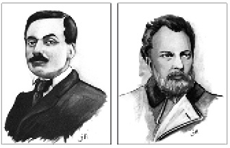
1860’lar Osmanlı basınında gazetelerin de atılım yılları oldu. 1860’ta Agâh Efendi
Tercüman-ı Ahval’i çıkardı. Şinasi’nin 1862’de yayımladığı Tasvir-i Efkâr’ın başına
bir süre sonra Namık Kemal geçti.
Pozitivist felsefenin yakın tarihi bu kitapta çok yönlü bir biçimde ele alınmıştı. Gabriel Monod, Ernest Lavisse, Gustave Flaubert, Carsten Niebuhr, Theodor Mommsen ve Hippolyte Taine, Henri Bergson, Emile Boutroux, Alfred Fouillée, Arthur Shopenhauer gibi çağın ünlü yazarları ve filozoflarını Osmanlı aydın kesimi Ahmed Şuayib sayesinde tanıyacaktı. Hippolyte Taine’nin Servet-i Fünûn üzerinde etkisi büyüktü. Bu arada Gabriel Tarde ve Émile Durkheim’in adını ilk duyuran yine Ahmed Şuayib olmuştu. Servet-i Fünûn’daki makaleleri daha sonra Hayat ve Kitaplar adlı eserinde yer alacaktı. İlk baskısını 1901 yılında yapan bu kitapta Tarde ve Durkheim ilk defa Osmanlı literatürüne giriyordu.84Eserde “Lâhika” başlıklı bölümde pozitivizmin gelişiminden söz ediliyor, Auguste Comte’un “hikmet-i ictimaiyye”nin kurucusu addedildiği kaydediliyordu. René Worms’un kurduğu Société Internationale de Sociologie’ye ve çıkardığı Revue Internationale de Sociologie yıllıklarına yer verildikten sonra, 19. yüzyılın sonu, 20. yüzyılın başında “hikmet-i ictimaiyye” taraftarlarının iki ayrı kampta yer aldığı belirtiliyordu. Bu kamplardan ilkinin başında Durkheim bulunuyordu. Durkheim’in izinden gidenler “cemiyet, hakikî ve müteazzıv [organize] bir mevcuddur” ilkesini benimsemişlerdi. Bir diğer deyişle toplum, bağlantısı olmayan, bağımsız, kendi içinde bütünlüğü olan bir olguydu. Ahmed Şuayib’e göre bu çizgi realistti. Gabriel Tarde ise nominalisti; toplum insan ruhunun “tecdîd”inden, yenilenmesinden ibaretti; psikolojik bir olguydu. Ahmed Şuayib’in Durkheim’le ilgili söyledikleri bu kadardı. Onun odaklandığı sosyolog Tarde idi. “Tarde, şimdiki Fransız filozoflarının en parlak ve muktedirlerindendir” diyor, uzun uzun filozofun hayat hikâyesini anlatıyordu.85Ahmed Şuayib’in ölümü üzerine Ulum-ı İktisadiyye ve İctimaiyye Mecmuası’nın 23. sayısı Asaf Nef’i’nin uzun bir nekroloji yazısına yer vermişti.86
Auguste Comte sonrası bir süre bocaladıktan sonra sosyolojinin soluklanmasına olanak veren iki önemli akım 19. yüzyılın sonlarında doğmuştu. Bunlar Tarde ve Durkheim sosyolojileriydi. Gustave Tarde-Émile Durkheim çatışması Fransa’da olduğu gibi Türkiye’de de uzun süre gündemi işgal etti. Bu en azından 1920’li yılların sonlarına kadar böyleydi. Aslında bu iki düşünürün uzlaşamadıkları konu, toplumsal olguların kökeninde bireyin mi yoksa toplumun mu olduğuydu. Tarde bireyden yola çıkarak toplumsal olguları açıklarken, Durkheim toplumsal olguların bireyden bağımsız, aksine bireye “zor”la kabul ettirilen bir tür toplumsal yaptırım olduğu kanısındaydı. Bu görüşler psikoloji ile sosyolojinin ilişkisini de belirliyordu. Durkheim’in ünü psikolojiden bağımsız bir sosyoloji bilimini inşa etmesiydi. Ulum-ı İktisadiyye ve İctimaiyye Mecmuası sosyolojiden söz ederken psikolojiyle ya da bireyle bağını koparamayan bir anlayışı simgeliyordu. Oysa Selanik, Durkheim’in izinde “tam bağımsız” bir sosyolojiyi savunuyordu. Gökalp sosyolojisi de son kertede Durkheim’i izleyecekti.
Biyoloji, psikoloji ve sosyolojinin bütünselliği Ulum-ı İktisadiyye ve İctimaiyye Mecmuası’nın “ulum-ı ictimaiyye”sini oluşturuyordu. Ulum-ı İktisadiyye ve İctimaiyye Mecmuası’nın bu çizgiye oturmasında derginin kurucuları arasında yer alan Ahmed Şuayib’in önemli bir rolü vardı. Yazarın bu mecmuada kaleme aldıklarında psikolojinin etkisi bariz bir biçimde gözlemlenebiliyordu. Sosyoloji bilimi Ulum-ı İktisadiyye ve İctimaiyye Mecmuası’nda henüz kimlik kazanmamıştı. Çoğu yazar son kertede sosyolojiden değil, felsefeden söz ediyordu. “Ulum-ı ictimaiyye” o nedenle tam anlamıyla sosyoloji sayılmazdı. Sosyal ve beşeri bilimlerin bir tür karışımıydı. Bu tür bir anlayış Ahmed Şuayib’de de hâkimdi.87
Ulum-ı İktisadiyye ve İctimaiyye Mecmuası sosyolojiye bu denli geniş yer veren bir Osmanlı dergisi oluşu sıfatıyla sosyolojinin kurucusu Auguste Comte’u unutamazdı. Auguste Comte’un yaşamını ve düşüncesini Osmanlı okurlarına tanıtmak yine Ulum-ı İktisadiyye ve İctimaiyye Mecmuası’na düşüyordu. Bu görevi ünlü matematikçi Salih Zeki üstlendi. Derginin ikinci sayısında Auguste Comte’a geniş bir yer ayrıldı. Bu arada Comte’un yaşamöyküsünü veren bölüm eşi Halide Salih’in [Edib] imzasıyla çıkacaktı.88
Bir önceki bölümde Etnografya kitabı nedeniyle geniş yer verilen Sâtı Bey’in dergide “Uzviyetler ve cemiyetler”89ve “Mebâhis-i ruhiyye”90başlıklı iki yazısı yer alacaktı. Sâtı Bey’e göre organik ya da uzvî yapı ve toplum aynı olayın iki farklı safhasıydı. Uzviyetler birer toplum, toplumlar birer uzviyetti. Uzviyetler de, toplumlar da değişik düzeylerde dayanışma üzerine kuruluydu. Sâtı Bey insan toplumlarının geleceğini dayanışma ve işbölümünde görüyordu. Bu bağlamda küresel beklentileri vardı. Zamanla ülkelerin birleşmesiyle büyük konfederasyonların kurulmasını olası görüyordu.
Sâtı Bey’in kardeşi Bedii Nuri de Mülkiye mezunuydu. Ulum-ı İktisadiyye ve İctimaiyye Mecmuası’nın yanı sıra Şehbal’da yazıları yayımlanmıştı. Ulum-ı İktisadiyye ve İctimaiyye Mecmuası Bedii Nuri’nin “Hikmet-i ictimaiyye -1- Tarih-i hudûs (sonradan peyda olma) ve neş’eti”,91 “Kabiliyyet-i ictimaiyye”92 “Hayat-ı ictimaiyye”,93 “Beynelmilel Ulum-ı İctimaiyye Müessesesi’nin Yedinci Kongresi” başlıklı yazılarına yer verecekti.94Bedii Nuri’nin Yedinci Uluslararası Sosyoloji Kongresi yazısı Osmanlı ve Cumhuriyet Türkiyesi için ayrı bir önem arz ediyordu. Zira solidarizm başlığı altında ileriki bölümlerde ele alınacak toplum felsefesi ilk kez, sosyolojik bağlamda bu yazıda yer alıyordu. Kongrede tartışılan temel sorun “teavün-i ictimaî” yani sosyal yardımlaşma idi. Tartışmalar eninde sonunda dönüp dolaşıp Üçüncü Cumhuriyet Fransası’nın resmi ideolojisi olarak da nitelenen Radikal Parti lideri Léon Bourgeois’nın Osmanlıcaya “meslek-i teavün” diye çevrilen “solidarisme” konusuna odaklanmıştı.
Bedii Nuri bugün dayanışmacılık diye tanımladığımız solidarizmi okurlara ayrıntılı bir biçimde tanıtıyordu. Tabii solidarizm her ne kadar 19. yüzyılın yol açtığı toplumsal çöküntüye çözüm olarak önerilmiş ve yoksulları gözetmeyi hedeflemişse de sermaye çevrelerinin çıkarlarını rencide edebilecek bir ortam da yaratabilirdi. Bedii Nuri bu konuda da okurları teskin edecek bir cümleyle yazısına son veriyordu: “Teavün cemiyet için elzemdir, faydalıdır, fakat kavâid-i iktisadiyyeyi herc ü merc edecek derecede müfritâne olmama şartıyla!” Böylece, Ulum-ı İktisadiyye ve İctimaiyye Mecmuası’nda sosyalizm, anarşizm, feminizm tümüyle reddedilirken, solidarizm de risk faktörü içeren bir fikir hareketi olarak yorumlanıyordu.
Dergide sosyolojik konulara değinen bir diğer yazar Asaf Nef’i idi. “Mücadele-i hayatiyye ve tekemmül-i cem’iyyat” adlı yazısında Ludwig Gumplowicz ile Novicow’un eserlerine atıfta bulunularak sosyal Darwinizmi ele alıyor, bu arada Buffon’la birlikte gündeme gelen ve Darwin’le derinlik kazanan “hayat mücadelesi” fikrinin Malthus’ta da görüldüğünü kaydediyordu.95Her canlı varlık, biri kendisini doğuran çevre, öteki geniş dünya çevresi olmak üzere iki etki altındaydı. Yazıda bir anlamda Lamarckizm ile Darwinizm harmanlanıyordu. Lamarck’ın ve Darwin’in doğayla ilgili bulgularını Platon, Thomas More, Campanella ve Marx’ın toplumsal yaşamda aradıkları belirtildikten sonra tüm toplumsal sorunların ezenlerle ezilenler arasındaki kavgada odaklandığı sonucuna varılıyordu. Bu açıdan Asaf Nef’i, bir yandan Gumplowicz’in ırkçı yorumlarıyla arasına mesafe koyarak evrimci görüşleriyle Darwin’e uzanıyor, öte yandan Suphi Edhem’le birlikte Marksizmle dirsek teması kuruyordu. Nitekim dergi, Asaf Nef’i’nin “Demokrasi ve sosyalizm” adlı bir yazısına da yer verecekti.96
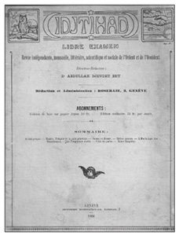
İlericilik-gericilik İctihad yazarlarının Osmanlı fikir hayatına kazandırdıkları
sözcükler oldu. Dergiye göre geleneğe bağlanmak gericilikti. İctihad kadın
haklarını ve ailenin modernleştirilmesini savunacak, medreseye karşı tavır
alacak, laik bir toplum anlayışını önerecekti.
Ulum-ı İktisadiyye ve İctimaiyye Mecmuası’nın bir diğer kurucusu Feylezof lakaplı Doktor Rıza Tevfik’ti. Tıp doktoru olan Rıza Tevfik hemen her konuda kalem oynatabilen bir yazardı. Siyasetten psikolojiye, biyolojiden antropolojiye farklı alanlarda kitap ve makaleleriyle ünlenmişti. Ulum-ı İktisadiyye ve İctimaiyye Mecmuası’nın ilk sayısına “Nüfus meselesi ve ehemmiyet-i siyasiyyesi ve ictimaiyyesi” başlıklı yazısıyla katkıda bulundu.97Onu “Ahlakın nüfusa tesiri”98izledi. Bilimleri tasnif eden “Tasnif-i ulûm – Bazı mukaddemat-ı felsefiyye” başlıklı felsefe yazısı ise iki sayıda yer aldı.99Öte yandan Meşrutiyet’in şiarı “hürriyet”ti. Rıza Tevfik bu konuya girmeden edemezdi. İki sayı tutacak olan yazısının başlığı “Hürriyet – İngiliz hekim-i meşhuru John Stuart Mill hürriyeti nasıl anlıyor?”du.100Stuart Mill yazısını Spencer izledi. Rıza Tevfik’in “Hükümet ve hürriyet hakkında Spencer’ın felsefesi” başlıklı yazısı beş sayı sürdü.101Anayasa üzerine makalesi ise “Hukuk-ı Esasiyyeye medhal” başlığını taşıyordu.102Ve nihayet “İngiltere’de bir amele köyü” Rıza Tevfik’in kaleme aldığı bir monografiydi.103
Osmanlı düşünce yapısında Tanzimat sonrası köklü dönüşümler izlendi. Bu süreçte İngilizcede “print culture” ya da “printed word” denilen matbaa ürünü yazılı kültürün ve basımın büyük önemi vardı. Osmanlı, Osmanlıca matbaa ile her ne kadar Müteferrika sayesinde 18. yüzyılın ilk yarısında tanışmışsa da 19. yüzyılın ikinci yarısına kadar kamuoyu oluşturacak bir basım etkinliğinden söz edilemezdi. Osmanlı’yı çağdaş bir topluma açan Kırım Harbi ertesi yayın hayatıydı. Bu süreçte dergiler ve gazetelerin büyük katkısı oldu. Ayrıca, önceleri risale –küçük kitapçık–olarak, ardından kitap olarak yayımlanan, popüler içerikli eserler Osmanlı düşüncesine büyük katkıda bulundu. Tıpkı 18. yüzyıl Fransası’nda olduğu gibi önce bireyin, “ferd”in inşa edilmesi gerekiyordu. Bu nedenle biyoloji ve psikoloji önem arz etti. Sosyal düşüncenin bu iki bilim alanıyla yakın bir bağı oldu. Ansiklopedici bir evrenin ardından pozitivist bir süreç başladı.
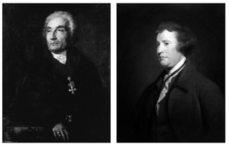
Fransız Devrimi’nin gündeme getirdiği toplumsal atomculuk zamanla yerini uzviyetçi kuramlara
bırakmıştı. Joseph de Maistre ve Edmund Burke uzviyetçi anlayışın yaygın bir
konum kazanmasında önemli rol oynadılar.
19. yüzyılda, en azından Kıta Avrupası’nda Fransızca hâkimdi. Osmanlı’nın Batı’ya açılan penceresi Fransızcaydı. Öte yandan sosyoloji bir bakıma Fransız icadıydı. Sosyal bilimlere Fransızca aracılığıyla varılması son derece doğaldı. Diğer dillerdeki düşünürler de Fransızcadan okunuyordu. İktisat bilimi “İngiliz” olmasına rağmen, Osmanlı’nın tüm iktisat bilgisi Fransızca kitaplar aracılığıyla ülkeye girmişti. Belki bu nedenle, sosyoloji iktisada fark attı. Sosyolojide Osmanlı günceli üç aşağı beş yukarı yakalamıştı. İktisatta ise bu böyle değildi. 20. yüzyıl başında Osmanlı iktisadi düşüncesi hâlâ Adam Smith düzeyindeydi. Oysa iktisat alıp başını gitmişti. Osmanlı hiçbir zaman neo-klasik iktisat nedir bilmedi. Adam Smith’ten doğrudan doğruya Friedrich List’e geçti ve “milli iktisat”ı benimsedi. 20. yüzyılın klasiği John Maynard Keynes’in iktisadi düşüncesiyle ancak İkinci Dünya Savaşı ertesi tanıştı. 1929 buhranı üzerine yazarın 1936’da yazdığı ünlü “Genel Teori” kitabı ancak 32 yıl sonra Türkçeye çevrilebildi. Oysa Durkheim sosyolojisi Anglosakson dünyadan önce Türkiye’de tanındı. Durkheim’in birçok eseri İngilizceden önce Türkçeye çevrildi.
Sosyoloji dersinin ilk ihdas edildiği ülkelerden biri Osmanlı Devleti’ydi. Bunda İttihatçıların büyük rolü oldu. Daha Selanik’ten itibaren İttihat ve Terakki sosyolojiyi destekledi. Sosyoloji dergilerine finansal yönden arka çıktı. Ünlü ideologu, Merkez-i Umumî üyesi Ziya Gökalp, aslında Türkiye’ye sosyolojiyi getiren kişi sayıldı. Sosyoloji ile iktisat arasındaki orantısızlık Gökalp’in düşüncesinde bariz bir biçimde görülebiliyordu. Gökalp’in yazıları sosyolojide ne denli derinlik kazandıysa, iktisatta o denli sığdı. İttihatçılar “milli iktisat”ı el yordamıyla buldular. Gökalp ise 1923’te kaleme aldığı Türkçülüğün Esasları’nda bile hâlâ, Batı’da “guild socialism” diye bilinen zanaat üzerine kurulu bir tür korporatif yapıyı savunacaktı. Bir diğer deyişle sosyoloji Osmanlı son döneminde başat bir bilimdi. Sosyolojizm her derde deva bir bilim alanı olarak görüldü. Büyük Millet Meclisi’nin Cumhuriyet kurulurken Durkheim’in İctimaî Taksim-i Amel104 [Toplumsal İşbölümü] adlı eserini Türkçeye çevirtmesi rastlantı olamazdı.
72 İsmail Doğan, Tanzimatın İki Ucu: Münif Paşa ve Ali Suavi (Sosyo-Pedagojik Bir Karşılaştırma), İstanbul: İz Yayıncılık, 1991; Âdem Akın, Münif Paşa ve Türk Kültür Tarihindeki Yeri, Ankara: Atatürk Kültür Merkezi Başkanlığı Yayını, 1999; Ali Budak, Batılılaşma Sürecinde Çok Yönlü Bir Osmanlı Aydını, İstanbul: Kitabevi, 2004; M. Kayahan Özgül, XIX. Asrın Benzersiz Bir Politekniği: Münif Paşa, Ankara: Elips Kitap, 2005.
73 Şinasi üzerine temel başvuru kitapları: Murat Uraz, Şinasi - Hayatı, Şahsiyeti, Eserlerinden Seçme Parçalar, 2. baskı, İstanbul: Türk Neşriyat Yurdu, 1955; Gündüz Akıncı, Batıya Yönelirken Şinasi, 3. baskı, Ankara: Dil ve Tarih-Coğrafya Fakültesi Yayını, 1981; Ziyad Ebüzziya, Şinasi, yayına haz. Hüseyin Çelik, İstanbul: İletişim Yayınları, 1997; Bedri Merbutlu, Sosyal Düşünce Tarihimizde Şinasi, İstanbul: Kaknüs Yayınları, 2003.
74 Ali Suavi için bkz. Midhat Cemal Kuntay, Sarıklı İhtilalci - Ali Suavi, İstanbul: Ahmet Halit Kitabevi, 1946; İsmail Doğan, Tanzimatın İki Ucu: Münif Paşa ve Ali Suavi (Sosyo-Pedagojik Bir Karşılaştırma), İstanbul: İz Yayıncılık, 1991.
75 Ahmed Midhat için bkz. Münir Süleyman Çapanoğlu, İdeal Gazeteci Efendi Babamız Ahmet Mithat, İstanbul: Gazeteciler Cemiyeti Yayını, 1964; Hakkı Tarık Us (haz.), Bir Jübilenin İntiba’ları - Ahmed Midhat’ı Anıyoruz!, İstanbul: Vakit Gazete-Matbaa-Kütüphane, 1955; C. Kudret, Ahmet Mithat, Ankara: Türk Dil Kurumu Yayını, 1962; Orhan Okay, Batı Medeniyeti Karşısında Ahmed Midhat Efendi, Ankara: Atatürk Üniversitesi Yayını, 1975; Şevket Rado, Ahmet Mithat Efendi, Ankara: Kültür ve Turizm Bakanlığı Yayını, 1986; Erol Ülgen, Ahmet Midhat Efendi’de Çalışma Fikri, İstanbul: Ahilik Araştırma ve Kültür Vakfı Yayını, 1994; Himmet Uç, Ahmet Mithat San’at ve Edebiyatı, Ankara: Bizim Büro Basımevi, 2000; Ahmet Mithat Efendi, Letaif-i Rivayat, haz. Fazıl Gökçek & Sabahattin Çağın, İstanbul: Çağrı Yayınları, 2001; Fazıl Gökçek, Osmanlı Kapısında Büyümek - Ahmet Mithat Efendi’nin Hikâye ve Romanlarında Gayrimüslim Osmanlılar, İstanbul: İletişim Yayınları, 2006.
76 Zafer Toprak, Türkiye’de Milli İktisat 1908-1918, İstanbul: Doğan Kitap, 2012, s. 85-124. “Osmanlı’da İktisadî Düşünce ve ‘Milli İktisat’” başlıklı 2. bölüm.
77 Sebilürreşad için bkz. Esther Debus, Sebilürreşâd, çev. Atilla Dirim, İstanbul: Libra Kitapçılık ve Yayıncılık, 2009; Eşref Edib & Fahrettin Gün, İstiklal Mahkemelerinde Sebilürreşad’ın Romanı, İstanbul: Beyan Yayınları, 2002; M. Suat Mertoğlu, Sırat-ı Müstakim Mecmuası (Açıklamalı Fihrist ve Dizin), İstanbul: Klasik Yayınları, 2008. Sebilürreşad dergisi İkinci Dünya Savaşı ertesi tekrar yayın hayatına girdi: Fahrettin Gün, Sebilürreşad Dergisi Ekseninde Çok Partili Hayata Geçerken İslamcılara Göre Din-Siyaset ve Laiklik 1948-1954, İstanbul: Beyan Yayınları, 2001.
78 Mehmet Ö. Alkan, “Laik bir İdeolojini Doğuşu ya da II. Meşrutiyet’te Türkçülüğün Toplumsal İdeolojisi: Yeni Hayat ve Yeni Felsefe Mecmuası”, içinde: Tarık Zafer Tunaya’ya Armağan, İstanbul: İstanbul Barosu Yayını, 1992, s. 377-407.
79 M. Şükrü Hanioğlu, Bir Siyasal Düşünür Olarak Doktor Abdullah Cevdet ve Dönemi, İstanbul: Üçdal Neşriyat, 1981.
80 Ulum-ı İktisadiyye ve İctimaiyye Mecmuası’nda yer alan toplumsal düşünceyi bugüne kadar en ayrıntılı bir biçimde ele alan Hilmi Ziya Ülken’dir. Bkz. Hilmi Ziya Ülken, Türkiye’de Çağdaş Düşünce Tarihi, İstanbul: Ülken Yayınları & Türkiye İş Bankası Kültür Yayınları, 2013. [İlk baskı Konya, Selçuk Yayınları, 1966] Hilmi Ziya Ülken’in bu büyük eserinin en önemli eksiği yazarının aşağıdaki bölümlerde sözü edilecek olan Yeni Felsefe Mecmuası’nı görmemesidir. Tüm kitap boyunca Yeni Felsefe Mecmuası’ndan tek bir dipnotta söz edilmektedir. Verilen tarih de yanlıştır. Bu nedenle Durkheim’in Osmanlı’ya gelişi konusunda ketum davranmaktadır. Ahmed Şuayib’i zikretmekle yetinmektedir. Ulum-ı İktisadiyye ve İctimaiyye Mecmuası’nda yer alan iktisadi düşünce için bkz. Zafer Toprak, Türkiye’de Milli İktisat 1908-1918, İstanbul: Doğan Kitap, 2012. [İlk baskı, İstanbul: Yurt Yayınları, 1982.] Ayrıca son zamanlarda yayımlanan üç kitap: Deniz Karaman, Câvid Bey ve Ulum-ı İktisâdiye ve İçtimâiye Mecmuası, Ankara: Liberte Yayınları, 2001; Atila Doğan, Osmanlı Aydınları ve Sosyal Darwinizm, İstanbul: İstanbul Bilgi Üniversitesi Yayını, 2006; ve Atila Doğan-Haluk Alkan, Osmanlı Liberal Düşüncesi: Ulum-ı İktisadiye ve İctimaiye Mecmuası, İstanbul Bilgi Üniversitesi Yayını, 2010.
81 Ahmed Şuayib, Mehmed Cavid, Rıza Tevfik, “Mukaddime ve Program”, Ulum-ı İktisadiyye ve İctimaiyye Mecmuası, sene 1, cilt 1, sayı 1, 15 Kânun-ı evvel 1324, s. 1-10. Dergi “ulûm-ı ictimaiyye”yi şu şekilde tanıtıyordu: s. 9 “Ulûm-ı ictimaiyyeye gelince: Auguste Comte’un ‘hikmet-i ictimaiyye’ ve Le Play’in ‘ilm-i cemiyyet’e dair açtıkları mesâlik son zamanlarda o derece tekemmül etti, o kadar şayan-ı hayret bir faaliyet göstermeye başladı ki şimdi hemen her mevzu’a, her meseleye tasassudât-ı mûşikâfâne ile müdahale eylemektedir. Bugün felsefe, tarih, hukuk, ahlak, terbiye, san’at hakkındaki malumât-ı beşeriyye kâmilen değişerek büsbütün başka bir ufk-ı vasi’ tefekkürât küşad edilmiştir. Bu tebeddülâtı yapan, sami’a-yı beşere ulvî hakikatler telkin eden ilimdir.
Hayat-ı irfan-ı milelde ulûm-ı ictimaiyyenin bu derece bir mertebe-i refi’aya irtika edeceğini ihtimal ki vaz’ıları bile ümid etmemişlerdi. Ricâl-i devletin mesai-i tecdidiyye ve ıslahiyyelerinde müşavir-i harekâtı ulûm-ı ictimaiyye olmazsa, bihakkın tayin-i güzergâh-ı selamet edilemeyeceğini, imar ve ıslah-ı memleket kabil olamayacağını bütün mütefekkirîn itiraf ediyor. İşte bunun için mecmuamız esâtîze-i ulûm-ı ictimaiyyenin neşriyyat-ı feyyazânelerini esas ittihaz ederek bu ilimlerin kaffe-i şuabâtına dair mufassal makaleleri muhtevi olacaktır.
Mecmuamız bu hususunda da âfetengiz netâice bais olan fikr-i ifratperestînin hiçbir zaman mürevvici olmayacaktır. Hikmet ve ihtiyat, vazife ve hakkın sada-i irşadı daima rehberimiz olacaktır. “
82 Zafer Toprak, Türkiye’de Milli İktisat 1908-1918, İstanbul: Doğan Kitap, 2012, s. 259-260.
83 Hoca Tahsin Merhum, Külliyyat-ı Hoca Tahsin’den - Psiholoji yahud İlm-i Ruh, İstanbul: Artin Asaduryan Şirket-i Mürettibiyye Matbaası, 1310.
84 Ahmed Şuayib, Hayat ve Kitaplar, İstanbul, 1317. Ahmed Şuayib’in 1912 yılında vakitsiz ölümü üzerine Maliye Nazırı Cavid Bey’in girişimiyle ikinci kez yayımlandı: Hayat ve Kitaplar, [Maliye Nazırı-ı Muhteremi Cavid Bey’in müsaade-i mahsuseleriyle ikinci def’a olarak tab’ edilmiştir], İstanbul: Matbaa-i Hukukiyye, 1329. [Musavver Servet-i Fünûn gazetesine derc edildikten sonra tab’ edilmiştir.] Kitabın Latin harfleriyle baskısı için bkz. Ahmed Şuayib, Hayat ve Kitaplar, haz. Erdoğan Erbay, Ankara: Salkımsöğüt Yayınları, 2005.
85 “Tarde bir zamandan beri bütün faaliyet-i zihniyyesini ulûm-ı ictimaiyyeyi tetebbua hasrederek bu zeminde de asar-ı muazzama ve nefise yazmaya muvaffak olmuştur. İki hafta evvel ulum-ı ahlakiyye ve siyasiyye akedemisinde Levet’nin yerine aza intihab olunduğu gibi altı ay mukaddem de Collège de France’ın ‘felsefe-i cedide’ muallimliğine tayin edilmiştir.” Hayat ve Kitaplar, İstanbul: Matbaa-i Hukukiyye, 1329, s. 187.
86 Asaf Nef’i, “Ahmed Şuayib”, Ulum-ı İktisadiyye ve İctimaiyye Mecmuası, sene 2, cilt 3, sayı 11/23, 1 Teşrin-i sani 1326, s. 1013-1023.
87 Ahmet Şuayib velut bir yazardı; sosyolojinin dar kalıplarıyla yetinmiyordu. Bir kere Fransız Devrimi’nin diğer Jön Türkler gibi onun da bilincinde derin izleri vardı. Nitekim derginin ilk sayısından itibaren, ölümüne değin tam 22 sayı “Fransız İhtilâl-i Kebiri”ni dizi olarak yayımlamıştı. Dergide yer alan ilk yazı “Yirminci asırda tarih” Ahmed Şuayib’in kaleminden çıkmıştı. [sene 1, cilt 1, sayı 1, 15 Kânun-ı evvel 1324, s. 11-24.] Yine aynı sayıda “Devlet ve cemiyet” adlı yazısı yer almıştı. [sene 1, cilt 1, sayı 1, 15 Kânun-ı evvel 1324, s. 54-71.] İki, üç ve dördüncü sayılarda “Hürriyet-i mezhebiyye - Düvel-i mütemeddinenin siyaset-i mezhebiyyeleri”, [“Hürriyet-i mezhebiyye-İslamiyyet ve Katolik kilisesi”, sene 1, cilt 1, sayı 2, 15 Kânun-ı sânî 1324,s. 145-162; “Hürriyet-i mezhebiyye - Düvel-i mütemeddinenin siyaset-i mezhebiyyeleri”, sene 1, cilt 1, sayı 3, 15 Şubat 1324, s. 315-340.] beşinci, altıncı ve yedinci sayılarda “Avâmil-i ictimaiyye” başlığı altında sırasıyla “Irk nazariyyesi” [sene 1, cilt 2, sayı 5, 1 Mayıs 1325, s. 40-80.] “Tesirât-ı muhitiyye” sene 1, cilt 2, sayı 6, 1 Haziran 1325, s. 145-160.] ve “Para” [“Avâmil-i ictimaiyye -3- Para”, sene 1, cilt 2, sayı 7, 1 Temmuz 1325, s. 289-321.] konuları ele alınmıştı. Sonraki sayılarda yayımlanan “Viyana Mü’temeri (Kongresi)” [sene 1, cilt 2, sayı 8, 1 Ağustos 1325, s. 481-504] ve “İkinci Filip ve Ahfâdı” [sene 1, cilt 3, sayı 9, 1 Eylül 1325, s. 20-46; “İkinci Filip 1598-1665 ve ahlâfı”, sayı 10, 1 Teşrin-i evvel 1325, s. 170-190.] başlıklı yazıları onun her zaman tarihle dirsek teması içinde olduğunu kanıtlıyordu. “Terbiye, tahsil”, [sene 1, cilt 3, sayı 9, 1 Eylül 1325, s. 97-112.] Rusya – Tetebbuat-ı muhitiyye ve ma’şeriyye”, [sene 1, cilt 3, sayı 11, 1 Teşrin-i sânî 1325, s. 289-306; sayı 12, 1 Kânun-ı evvel 1325, s. 457-475.] “Borsa muamelâtı”, [sene 2, cilt 1, sayı 3/15, 1 Mart 1326, s. 425-432; cilt 2, sayı 5/17, 1 Mayıs 1326, s. 577-612.]
88 Salih Zeki & Halide Salih, “Auguste Comte – Felsefe-i müsbete”, Ulum-ı İktisadiyye ve İctimaiyye Mecmuası, sene 1, cilt 1, sayı 2, 15 Kânun-ı sânî 1324, s. 163-197.
89 Sâtı, “Uzviyetler ve cemiyetler”, Ulum-ı İktisadiyye ve İctimaiyye Mecmuası, sene 1, cilt 2, sayı 8, 1 Ağustos 1325, s. 433-454.
90 Sâtı, “Mebahis-i ruhiyye”, Ulum-ı İktisadiyye ve İctimaiyye Mecmuası, sene 1, cilt 3, sayı 9, 1 Eylül 1325, s. 71-87; sayı 10, 1 Teşrin-i evvel 1325, s. 145-170.
91 Bedii Nuri, “Hikmet-i ictimaiyye -1- Tarih-i hudûs (sonradan peyda olma) ve neş’eti”, Ulum-ı İktisadiyye ve İctimaiyye Mecmuası, sene 1, cilt 2, sayı 5, 1 Mayıs 1325, s. 81-108.
92 Bedii Nuri, “Kabiliyyet-i ictimaiyye-i -1- Kabiyiyyet-i ictimaiyye hakkında bir fikr-i umumî”, Ulum-ı İktisadiyye ve İctimaiyye Mecmuası, sene 1, cilt 2, sayı 7, 1 Temmuz 1325, s. 322-353.
93 Bedii Nur, “Hayat-ı ictimaiyye -1- Cemiyet ne demektir?”, Ulum-ı İktisadiyye ve İctimaiyye Mecmuası, sene 1, cilt 3, sayı 9, 1 Eylül 1325, s. 1-19.
94 Bedii Nuri, “Beynelmilel Ulum-ı İctimaiyye Müessesesi’nin Yedinci Kongresi”, Ulum-ı İktisadiyye ve İctimaiyye Mecmuası, sene 1, cilt 3, sayı 10, 1 Teşrin-i evvel 1325, s. 191-197.
95 Asaf Nef’i, “Mücadele-i hayatiyye ve tekemmül-i cem’iyyat”, Ulum-ı İktisadiyye ve İctimaiyye Mecmuası, sene 1, cilt 2, sayı 8, 1 Ağustos 1325, s. 455-480.
96 Asaf Nef’i, “Demokrasi ve sosyalizm”, Ulum-ı İktisadiyye ve İctimaiyye Mecmuası, sene 1, cilt 2, sayı 6, 1 Haziran 1325, s. 161-171.
97 Doktor Rıza Tevfik, “Nüfus meselesi ve ehemmiyet-i siyasiyyesi ve ictimaiyyesi”, Ulum-ı İktisadiyye ve İctimaiyye Mecmuası, sene 1, cilt 1, sayı 1, 15 Kânun-ı evvel 1324, s. 34-53.
98 Rıza Tevfik, “Ahlakın nüfusa tesiri”, Ulum-ı İktisadiyye ve İctimaiyye Mecmuası, sene 1, cilt 1, sayı 2, 15 Kânun-ı sânî 1324, s. 233-248.
99 Rıza Tevfik, “Tasnif-i ulûm - Bazı mukaddemât-ı felsefiyye”, Ulum-ı İktisadiyye ve İctimaiyye Mecmuası, sene 1, cilt 1, sayı 3, 15 Şubat 1324, s. 364-388; sayı 4, 15 Mart 1325, s. 499-536.
100 Rıza Tevfik, “Hürriyet - İngiliz hekim-i meşhuru John Stuart Mill hürriyeti nasıl anlıyor?”, Ulum-ı İktisadiyye ve İctimaiyye Mecmuası, sene 1, cilt 2, sayı 5, 1 Mayıs 1325, s. 19-39; sayı 6, 1 Haziran 1325, s. 190-237.
101 Doktor Rıza Tevfik, “Hükümet ve hürriyet hakkında Spencer’ın felsefesi”, Ulum-ı İktisadiyye ve İctimaiyye Mecmuası, sene 1, cilt 2, sayı 7, 1 Temmuz 1325, s. 354-368; cilt 3, sayı 10, 1 Teşrin-i evvel 1325, s. 224-246; sene 2, cilt 1, sayı 1/13, 1 Kânun-ı sânî 1325, s. 107-118; sayı 2/14, 1 Şubat 1325, s. 238-245; cilt 2, sayı 5/17, 1 Mayıs 1326, s. 672-690.
102 Rıza Tevfik, “Hukuk-ı Esasiyyeye medhal”, Ulum-ı İktisadiyye ve İctimaiyye Mecmuası, sene 2, cilt 1, sayı 4/16, 1 Nisan 1326, s. 532-586; cilt 2, sayı 5/17, 1 Mayıs 1326, s. 613-629.
103 Doktor Rıza Tevfik, “İngiltere’de bir amele köyü”, Ulum-ı İktisadiyye ve İctimaiyye Mecmuası, sene 1, cilt 3, sayı 10, 1 Teşrin-i evvel 1325, s. 209-223.
104 Émile Durkheim, İctimaî Taksim-i Amel, İstanbul: Matbaa-i Amire, 1340. Türkiye Cumhuriyeti Maarif Vekâleti neşriyatından aded: 4. Telif ve Tercüme Heyetince tetkik ve kabul edilmiştir.